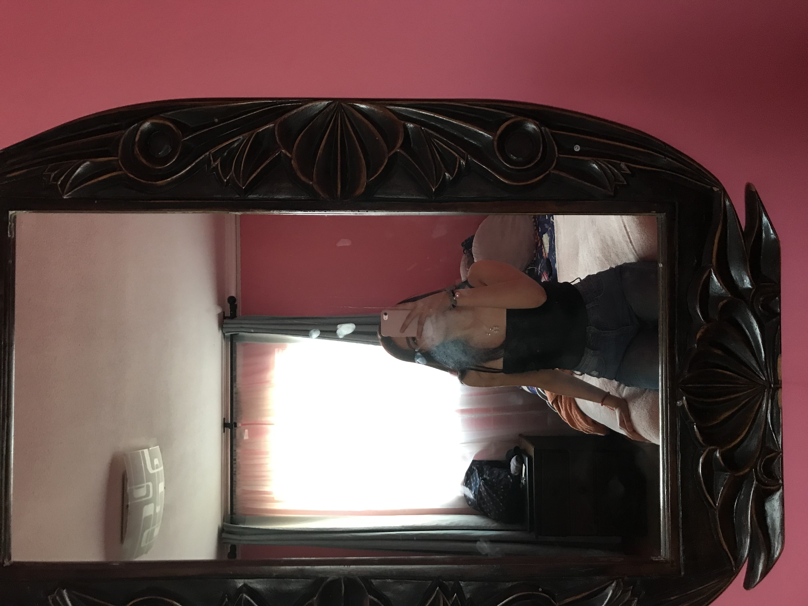

Antonia Garrido
Yo entre al tp por que me llamaba la atencion el crear paginas web, juegos, etc pero ahora me di cuenta que esto no es lo mio despues de salir del colegio estudiare algo completamente distinto por que no me veo dedicandome a esto, no me arrepiento de haber escogido el tecnico pero no me gusta para una profesion de por vida

Trabajos anteriores
En el semestre pasado trabaje en la pagina Jamback.store en la cual me dedique a trabajar en html y css